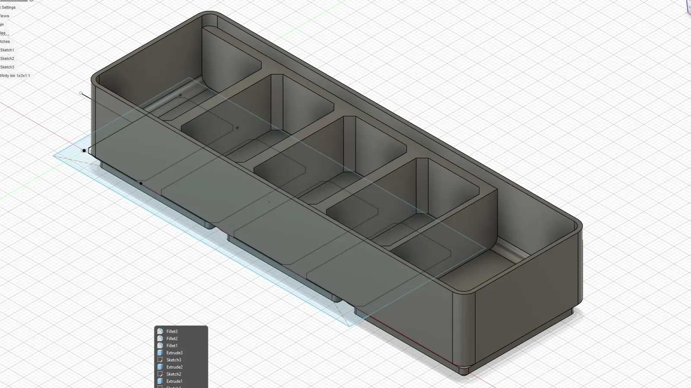

From a footprint to a home for each part
The build archive follows the organizer from compartment geometry in CAD to a physical print and a fit check with the actual camera. The system separates gear by shape rather than relying on one large tray.

Divide the footprint
Give the different accessories dedicated compartments, with open tops that keep the contents visible.
Print the geometry
Turn the digital layout into a physical part so wall height, access, and the overall footprint can be checked on the desk.
Check with the real kit
Place and remove the camera from its holder. The fit-check clip records the actual interaction; it is not a dimensional tolerance measurement.
Build footage
What I would improve next
- Add labels to make it easier to reset each accessory to its dedicated slot.
- Use a grid footprint so trays can combine into a larger drawer or shelf system.
- Test felt, TPU, or rubber feet for better protection and desk grip.